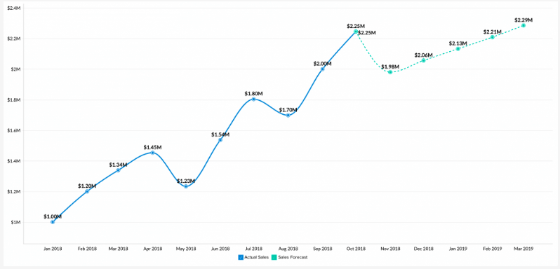

Neste espaço, eu demonstro como eu aplico a Análise de Dados para
gerar insights e solucionar problemas reais de negócio.
Fique à vontade para conferir.
Projetos
Através de projetos que utilizam dados públicos, sem restrição de utilização,
compartilho minhas habilidades, ferramentas utilizadas, experiências e conceitos envolvidos na
área de Análise de Dados.

Análise Exploratória e modelo de rankeamento (Classificação)
Análise Exploratória e elaboração de modelo rankeamento para aumentar eficiência do cross-sell do time de vendas.
Destaques: Modelo preditivo de rankeamento aumentou a conversão de vendas de 12.2% para 83.6%. Através da EDA, foi revelado grave problema de fidelização dos clientes antigos.

Dashboards Interativos no Power BI
Dashboards de Monitoramento Logístico e de Vendas (desempenho dos produtos)
Ambos desenvolvidos no PowerBI, os seguintes Dashboards abordam KPI estratégicos, de ambos os seguimentos, para acompanhamento da performance do negócio

Análise Exploratória e modelo preditivo de vendas
Análise Exploratória e modelo de previsão de vendas da rede de farmácias europeias Rossmann
Lojas com mais variedade de produtos e/ou lojas com promoções ativas por longos períodos de tempo tendem a vender menos. Previsão de vendas com margem de erro em patamares satisfatório.
Projeto de Clusterização em Andamento
Projeto de Clusterização ou Agrupamento - Agrupamento de clientes com base em características multidimensionais
Habilidades
Manipulação de Dados, DataViz e Habilidades
Python e R
SQL - SQLite, Postgres, MySQL, MariaDB
Jupyter Lab / Notebook
Matplotlib, Seaborn, Plotly
Excel, PowerBI, Google Data Studio
Análise Exploratória de Dados (EDA)
Python Webscrapping - BeautifulSoup
ETL - Airflow
Estatística e Machine Learning
Estatística descritiva ( dispersão, assimetria, distribuição, desvio padrão )
Scikit-learn - Algoritmos de Regressão, Classificação, Clusterização
Técnicas de Learn to Rank, balanceamento dos dados, Feature Engineering
Métricas de performance dos algoritmos ( RMSE, MAE, MAPE, Matrix de Confusão, Precisão, Recall, Curva Lift, Silhouette Score)
Ferramentas de Desenvolvimento
Git, Github, Gitlab
Streamlit, Flask, Python API's
AWS Amazon Cloud e Heroku Cloud
{kind=link}
{kind=link}